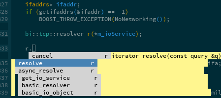
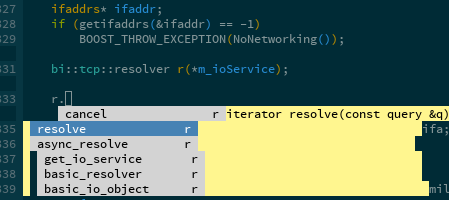

CPP Ethereum and Emacs
Eleftherios Karapetsas
lefteris@ethdev.com
Goal of this presentation
- Familiarize people with how to use Emacs in order to develop for CPP-Ethereum.
- Show ways to develop for Ethereum in Emacs.
- Make people like Emacs more (?)
Why Emacs?
- Advantages
- Our target is developers. Emacs, along with VIM is one of the most popular editors so a big part of our user-base.
- It's extensible and fully customizable and as such suits our tool creating needs
- Disadvantages
- Vanilla EMACS sucks.
- Can be a resource hog. For some people EMACS means:
- Eight Megabytes And Constantly Swapping
- Emacs Makes A Computer Slow
- Original meaning: Editor MACroS
Setup the environment
There are too many ways to setup a development environment in EMACS. I will showcase my own.
- Obtain el-get
- Specify the required packages
- Setup the packages
- Develop !
el-get
Installs, updates and initializes Emacs packages for you.
(add-to-list 'load-path "~/.emacs.d/el-get/el-get") (unless (require 'el-get nil 'noerror) (with-current-buffer (url-retrieve-synchronously "https://raw.githubusercontent.com/dimitri/el-get/master/el-get-install.el") (goto-char (point-max)) (eval-print-last-sexp))) (add-to-list 'el-get-recipe-path "~/.emacs.d/el-get-user/recipes") (el-get 'sync)
Obtaining new packages
- Downloading a new package
M-x el-get-install RET name-of-package
- Updating an already installed package
M-x el-get-update RET name-of-package
- Deleting an installed package
M-x el-get-remove RET name-of-package
- Update all installed packages
M-x el-get-update-all
Specifying your packages
(defvar my-packages '(s ag fill-column-indicator expand-region)) (el-get 'sync my-packages)
Packages for C++ development
- Must have
- malinka
- rtags
- auto-complete
- flycheck
- projectile
- Optional
- magit
- helm
Actually getting the packages
(defvar my-packages '(malinka rtags auto-complete flycheck projectile magit helm)) (el-get 'sync my-packages)
Malinka
A meta-package allowing users to configure C++ projects and feed their data to other packages.
(malinka-define-project :name "ethereum" :same-name-check nil :build-cmd "make clean && make -j5 VERBOSE=1" :build-root-directory "/home/lefteris/ew/cpp-ethereum/build" :root-directory "/home/lefteris/ew/cpp-ethereum" :compile-cmd "make -C .. -j4" :test-cmd "./build/test/testeth")
Rtags
Client server application that indexes C/C++ code and keeps a peristent in-memory Database of all references. Uses Clang. Provides:
- Jumping between tags and definitions/implementations especially in C++.
- Reference finding
- Auto completion (feeding data to the auto complete package)
- Clang fix-it hints
Reference finding


Auto completion
Simple example for BOOST's asio basic resolver.
 

Clang Fixits

Clang Fixits
Flycheck
A way to interface to various syntax checkers. For C++ clang syntax checker is recommended.

Projectile
A project management package. Uses version control to easily index all project files.

- Switch between headers/sources
- Compile a project
- Test a project
- Grep in a project
- Much more …
Developing Contracts in EMACS
- What about ethereum?
- How can we develop contracts from inside an EMACS environment?
- There already is a Serpent emacs mode
Developing Contracts in Emacs
Use EMACS solidity mode!
Solidity mode code
contract Ballot {
// Create a new ballot with $(_numProposals) different proposals.
function Ballot(uint8 _numProposals) {
address sender = 0x123; // msg.sender
chairperson = sender;
numProposals = _numProposals;
}
// Give $(voter) the right to vote on this ballot.
// May only be called by $(chairperson).
function giveRightToVote(address voter) {
if (/*msg.sender != chairperson ||*/ voted[voter]) return;
voterWeight[voter] = 1;
}
// Delegate your vote to the voter $(to).
function delegate(address to) {
address sender = 0x123; // msg.sender
if (voted[sender]) return;
while (delegations[to] != address(0) && delegations[to] != sender)
to = delegations[to];
if (to == sender) return;
voted[sender] = true;
delegations[sender] = to;
if (voted[to]) voteCounts[votes[to]] += voterWeight[sender];
else voterWeight[to] += voterWeight[sender];
}
// Give a single vote to proposal $(proposal).
function vote(uint8 proposal) {
address sender = 0x123; // msg.sender
if (voted[sender] || proposal >= numProposals) return;
voted[sender] = true;
votes[sender] = proposal;
voteCounts[proposal] += voterWeight[sender];
}
function winningProposal() const returns (uint8 winningProposal) {
uint256 winningVoteCount = 0;
uint8 proposal = 0;
while (proposal < numProposals) {
if (voteCounts[proposal] > winningVoteCount) {
winningVoteCount = voteCounts[proposal];
winningProposal = proposal;
}
++proposal;
}
}
address chairperson;
uint8 numProposals;
mapping(address => uint256) voterWeight;
mapping(address => bool) voted;
mapping(address => uint8) votes;
mapping(address => address) delegations;
mapping(uint8 => uint256) voteCounts;
}
Current features
… are very minimal
- Syntax highlighting
- Identation
Future work
- Auto completion
- Achievable as soon as solc prints out the AST of a contract in json.
- Integration with the debugger (?)
- Integration with other tools
Thank you
- Any questions?
- Any other cool tips by EMACS users?
- Get the slides from: https://github.com/LefterisJP/ethdevcon0_emacs.git
- Follow @LefterisJP for more updates.